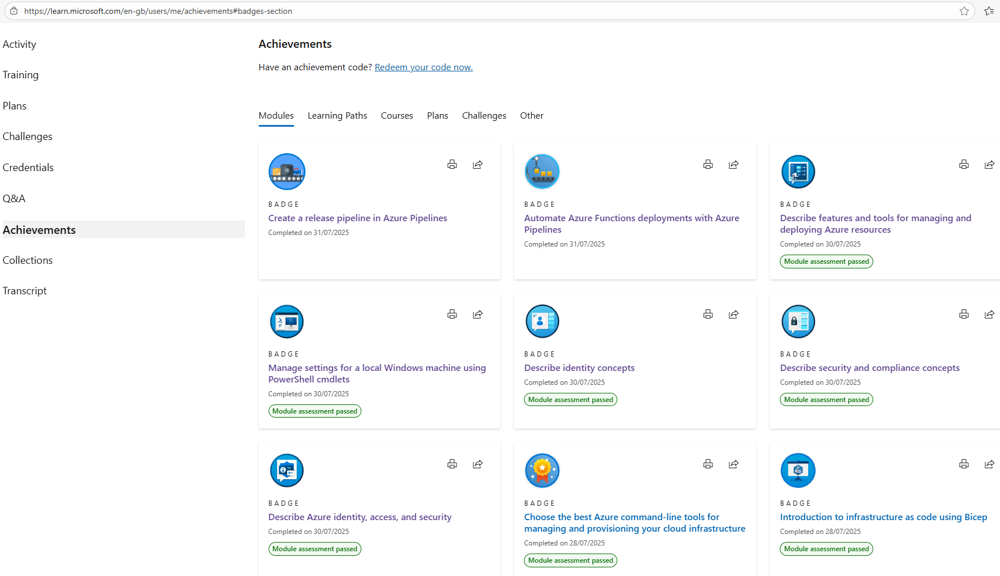

#
Powershell Magic
Back once again with the Powershell 🥓 flavour

So been a few mental days lately. One of the Shar-Pei dogs I own gave birth to 7 amazing puppies 5 boys and 2 girls. However had to take two of the boys to the vets due to their eyes not opening, and I think these two might need tacking to solve the issue. I am still waiting on the vet calling me back from the visit this morning.
Then since moving to the lovely North-Devon my car seems to have collected a number of scratches and chips. So trying to save a few quid and be a jack-of-all-trades I decided instead of paying a garage an insane amount of money to fix them I decided to do it myself. Well I can see why the garage charges what it does, as you do need a lot of skill and time to get the perfect finish. As although the repair work I done looked good, I am a perfectionist, so decided to sand it down a bit more, which then led to me being the karate-kid last night doing 4 hours of wax-on and wax-off to buff out the dullness of the sanding I done.
I was so aching from 4 hours non-stop T-cutting my car, but thankfully the big dull patch of paint is looking pretty damn good, not perfect yet, so may go for some extra wax-off and on traininig after work today and enter a karate competition next month or something 😄
#
Up your skill level
If you have seen my LinkedIn profile of late, you will know I am looking for new work opportunities. Even though this is like the worst time to be looking for new opportunities due to all the mass redundancies happening now, I do not want to be in the same situation some people are reporting they are in which is near homelessness.
Having been looking for work, and reading some of the skills and knowledge some companies are expecting from a single person also seems a bit insane. Like I know it is insane as I been in the industry for 25 years and I know it is not possible for just one person to have all the skills and qualifications some companies are looking for, that they list you need for a particular role. I have personally never met or worked with someone with that many qualifiction or knowledge.
Or you may have a douchebag manager who has not allowed you to explore and use your skill-sets to the fullest at the place you work, and your company or current job may not use all the latest and greatest IT tools or software. Again you may have had a terrible manager who has only tried to throw you under a bus by giving you random server issues to solve as no-one else has been able to solve them, not allowing you the time to look at building a new learning journey into things that may interest you. You might have been promised by your company multiple times that you would get training and never received any training, other than completing compulsary company courses that may not have anything to do with your job.
If any of the above applies to you, then I have some good news for you Microsoft has your back on all the IT training you could wish for. To make it even more amazing these training courses are totally free and if like me you got 5 daughters, the mrs, 3 cats and 10 dogs all relying on you bringing home the cash, then free is like one of the best things out there.
At this present moment on this day: There is a huge amount of 4,476 courses to choose from.
#
Badges
After completing these you either get a trophy or badge to recognise you learnt that particular learning path or completed all courses in that module. We all know kids love badges and stickers, and well if like me you may also think they are still cool even as an adult.
I want to be able to show the companies I am applying to work for, that I am that perfect candidate who really does know everything they have listed in the various skill-sets on the required job form. To help me be that candidate I have been ploughing through various courses and after 10 days of doing this I currently have 34 badges and six trophies. 🥳
I know you might be thinking 🤔 dude I read your blogs to learn cool Powershell stuff, and get inspirations for new ideas for scripting
Please be patient I promise there is a problem and Powershell solution in this blog post.
Now I got nothing against this Microsoft learning website, infact I 💖 it hence I been writing how cool it is. However, looking at the badges or trophies you have earnt, the cards displaying this information only go up to 3 cards wide. So on my 💻 laptop screen I can only see a maximum of 9 achievements at one time.

I wanted to display all my badges as one long image to post on LinkedIn, to spread the word I am now the badge man to employ. I took a total of 4 different snips but now needed to magically glue them together so-to-speak to great one long super cool badge looking achievement of the last 10 days.
#
Powershell to the rescue
So I decided to let Powershell combine the images for me vertically to allow me to have one long image as the end result. Thinking 3 parameters should do the trick wrapping this into a function, as I know when I earn some more badges I will want to achieve the same thing, so need something to re-use, so lets make a function to save the day. We will also need to accept an array of images to combine together, and finally an output path to save the final stitched together image.
This would save me looking on the web to download some software to do the exact same thing, and give me a tool I could re-use or potentially add new parameters to, or expand the ability of what the function actually does. Right now I just need to magic up some code to make this happen.
Please follow the Powershell verb noun naming conventions to follow best practices when writing functions, it will also make it more usable to the community should you deicde to publish it in a blog, or on the Powershell Gallery as a script or module.
This might not be the best solution out there but it worked, and I will be re-using it for when I have earnt some more badges.
function New-VerticalImage {
[CmdletBinding()]
param (
[Parameter(Mandatory)]
[string[]]$ImagePaths,
[Parameter(Mandatory)]
[string]$OutputPath,
[Parameter(Mandatory)]
[ValidateSet("PNG", "JPG", "BMP")]
[string]$ImageFormat
)
Add-Type -AssemblyName System.Drawing
# Load images
$bitmaps = $ImagePaths | ForEach-Object { [System.Drawing.Image]::FromFile($_) }
# Determine the width (assuming consistent width) and total height
$width = $bitmaps[0].Width
$totalHeight = ($bitmaps | Measure-Object -Property Height -Sum).Sum
# Create canvas
$finalImage = New-Object System.Drawing.Bitmap $width, $totalHeight
$graphics = [System.Drawing.Graphics]::FromImage($finalImage)
$graphics.Clear([System.Drawing.Color]::Transparent)
# Stitch images vertically
$offsetY = 0
foreach ($bitmap in $bitmaps) {
$graphics.DrawImage($bitmap, 0, $offsetY)
$offsetY += $bitmap.Height
$bitmap.Dispose()
}
# Determine format
switch ($ImageFormat) {
"PNG" { $format = [System.Drawing.Imaging.ImageFormat]::Png }
"JPG" { $format = [System.Drawing.Imaging.ImageFormat]::Jpeg }
"BMP" { $format = [System.Drawing.Imaging.ImageFormat]::Bmp }
}
# Save image
$finalImage.Save($OutputPath, $format)
$graphics.Dispose()
$finalImage.Dispose()
Write-Output "Image saved to: $OutputPath"
}To make it clear on using this, you would need to do something like:
New-VerticalImage -ImagePaths @(
"C:\Images\A.png",
"C:\Images\B.png"
) -OutputPath "C:\Images\MergedOutput.jpg" -ImageFormat "JPG"
Yes I know more error handling could have been implemented as in checking that the image paths you entered exist on the system before running all the code, but as I had something working, I was happy with the results, and it ticked all the boxes for what I wanted.
#
End result
Maybe I could look at implementing a width to make it a bit neater, but I was happy with this, so happy that I wrote this blog to hopefully inspire you that anything is possible with Powershell if you just add some 🥓 magic to it 😃
#
Something to share
Not made any new music for the last few days as been real busy, but this was the last video I uploaded to YouTube I hope you like 🎵